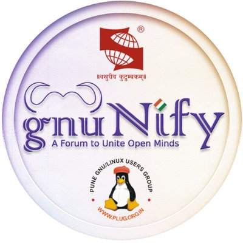

{kind=link}
Data Science and Deep Learning Intern Jun 2018-Present
A summer research/project internship focused on the usage of satellite imageries for environmental applications at Curvelogics Advanced Technology Solutions Pvt Ltd.
Latest Updates
1. Selected for a Research Poster Presentation Session at SICSR ACM-W, Pune (held on 12th January 2019)
2. Invited as a speaker to speak on Data Science and Deep Learning at 'GNUnify', one of India’s biggest open source software conferences conducted by Pune GNU/Linux Group (PLUG) and SICSR (to be held on February 15 and 16, 2019)
Hi I'm Hima currently pursuing my Bachelors in Technology, majoring in Computer Science and Engineering from Kerala Technological University. I am passionate about:
Using Technology to solve or address globally pressing problems like climate change, poverty alleviation and reach of education
Uplifting and encouraging women (especially in tech) to flourish with no fear and self-doubt,
Mindful usage of technology and opportunities,
Democratizing the use, access and benefits of technology
Environmental sustainability and Education.
As nerve-wracking as the current age of digital disruption and innovation is, I am excited to be a part of it as we progress to a very novel world and way of life.
I believe everyone should be given fair & unbiased access to all the wonderful opportunities technology has created, and I envision a future where there is no gap between technology and people from different demographic backgrounds. The fear that our rapidly changing times will change the way people live and work should not cripple anyone, not just the millenials. That is the only path I see to a sustainable future.
My strengths lie in analytical thinking and having a profound interest in and concern for community development and well-being. I love solving challenging problems and finding newer, more creative ways to approach them.
Data Science is one of the most exciting inter-disciplinary emerging fields that has the potential to solve all kinds of problems humanity faces – be it the study of the environment, government, consumer practices and even education; the application of this field goes across all socio-cultural, economic and geographic domains and understands their true, current conditions. It helps us to perceive and scrutinize actual phenomena, and also describes factors that are the causes of various issues and the factors that guide/lead us to the solutions. It is rightfully termed to be the fourth paradigm of science.
Ideas excite me and I love indulging in simulating conversations. I love mathematics and coding. I usually spend my spare time writing poetry, cooking or playing badminton.
Chatbot that answers questions about the GHCI student scholarship application. This chatbot was one of the 12 winning actions from across the country to be selected and displayed at GDG Bangalore's DevFest 2018.
Compiler handling a subset language of C and producing a three address code of the Input code
A total of 2000 of scholarships are sanctioned by The Prime Minister,for students performing exceptionally well in academics each academic year.
GHCI scholarships are awarded to deserving female undergraduates in the final year of their degree courses from computing, engineering and IT backgrounds to attend the country's largest technical conference for women in technology.
As an ambassador, I spread awareness about the IEEE Computer Society and initiate discussions on topics related to technology and it's usage
IEEE Computer Society offers upto 40 student scholarships globally to recognize and reward active student volunteer leaders in student branches or chapters who show promise in their academic and professional efforts.
The WeTech Qualcomm Global Scholars Program awards scholarships to students and matches each scholar with a mentor from a Qualcomm global in order to support & encourage them to succeed in their chosen fields.I was one of the 20 recipients of this scholarship out of 2000 applications.
I was one amongst the three invited TEDxThiruvananthapuram team members to attend the 3-day long TED India Workshop that was held at Infosys,Mysore. It helped me connect with all the other organising teams from across the country.
Aptitude assessment test conducted by Fourth Ambit. I scored 96.9 percentage in Logical reasoning and 99.7 in verbal ability and was one among the top 1000 students selected from the state.
Our project (a chatbot) was one of the 12 actions selected from 200+ entries from all across the country to be displayed at this year's GDG DevFest Bangalore
Received the award in appreciation of the meritorious performance (College topper in 5th Semester) in examinations conducted by APJ Abdul Kalam University.
Majoring in CSE
Kerala Technological University
CGPA - 9.1
Kendriya Vidyalaya, Pattom
HSE - 94.6% [Science Stream]
Kendriya Vidyalaya, Pattom
GPA - 10
A summer research/project internship focused on the usage of satellite imageries for environmental applications at Curvelogics Advanced Technology Solutions Pvt Ltd.
As an ambassador, I spread awareness about the IEEE Computer Society and initiate discussions on topics related to technology and it's usage.
I was the mentor to one of the participants of the Women In Tech learning program. My mentee was one of the five winners of the program and she got the WIT-GHCI scholarship through which she attended the Grace Hopper Celebration India 2018, Asia's largest technical conference for Women.
A techno social outreach program for an all- inclusive usage of technology.
My responsibilities included looking after all the technical requirements in all the events organized by our student branch, IEEE SCT SB and making sure that the program went ahead without any technical issues. But I also volunteered and help out in many other requirements of the SB.